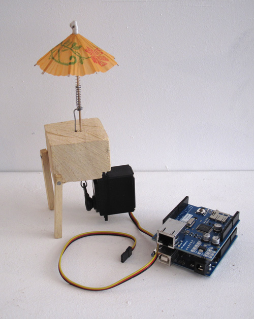

Objet connecté (Arduino, servomoteur, matériaux divers) 2013.
Développement informatique : Aurélien Fache

Premier prototype du parapluie connecté.
Little Umbrella est un objet connecté à Internet qui permet de connaître le temps qu'il va faire dans les 6 prochaines heures. Composé d'un petit parapluie en papier qui s'ouvre et se ferme en fonction de la météo, le dispositif permet une visualisation poétique du temps à venir...
Objectif : interfacer un parapluie à un servomoteur et le connecter à Internet
Data : yahoo weather API
Objet : parapluie cocktail
à suivre, work in progress...
Vous aussi vous aimez discuter du temps qu'il fait! Vous voudriez un petit parapluie pour chez vous? écrivez moi |